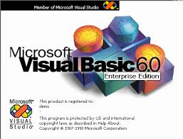
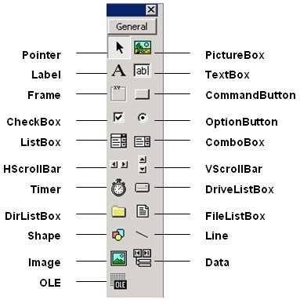
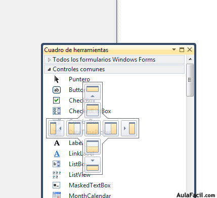
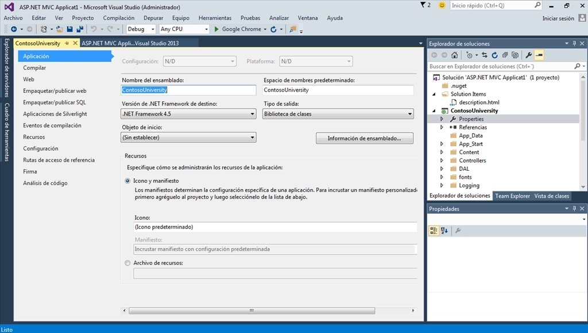
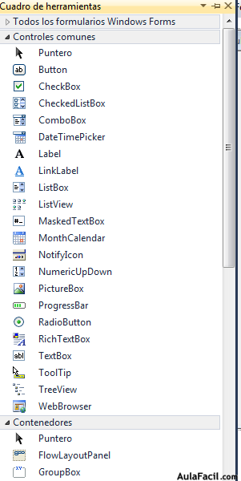

Programación y Base de Datos

Visual Basic es un lenguaje de programación dirigido por eventos. Desarrollado por Alan Cooper para Microsoft, este lenguaje de programación es un dialecto de BASIC con importantes agregados.
Entre sus importantes versiones encontramos
Como podemos saber cada programa tiene sus partes, entre las mas fundamentales encontramos:
Visual Basic 6.0 es un entorno de desarrollo integrado (IDE) y un lenguaje de programación de alto nivel desarrollado por Microsoft.
Fue lanzado en 1998 como parte de la suite Microsoft Visual Studio 6.0. Visual Basic 6.0 fue ampliamente utilizado en la década de 1990 y principios de la década de 2000 para el desarrollo de aplicaciones de escritorio para sistemas Windows.
Ingrese al siguiente link para comprender sobre su interfaz
Interfaz Visual basic 6.0estas son las herramientas de este programa
Visual Basic 2010 es una versión del lenguaje de programación Visual Basic desarrollado por Microsoft.
Fue lanzado en el año 2010 como parte de Visual Studio 2010
Una diferencia importante entre Visual Basic 2010 y la versión 6.0 es la introducción de características más modernas y orientadas a objetos
Ingrese al siguiente link para comprender sobre su interfaz
Interfaz Visual basic 2010estas son las herramientas de este programa
Visual Basic 2015 es otra versión del lenguaje de programación Visual Basic desarrollado por Microsoft. Fue lanzado como parte de Visual Studio 2015
La fecha de lanzamiento oficial de Visual Studio 2015 fue el 20 de julio de 2015.
Una diferencia importante entre Visual Basic 2015 y la versión 2010 es la introducción de nuevas características y mejoras en el lenguaje y el entorno de desarrollo.
Ingrese al siguiente link para comprender sobre su interfaz
Interfaz Visual basic 2015estas son las herramientas de este programa
Visual Basic 2022 es una versión del lenguaje de programación Visual Basic desarrollado por Microsoft.
La fecha de lanzamiento oficial en enero de 2022
Ingrese al siguiente link para comprender sobre su interfaz
Interfazestas son las herramientas de este programa
